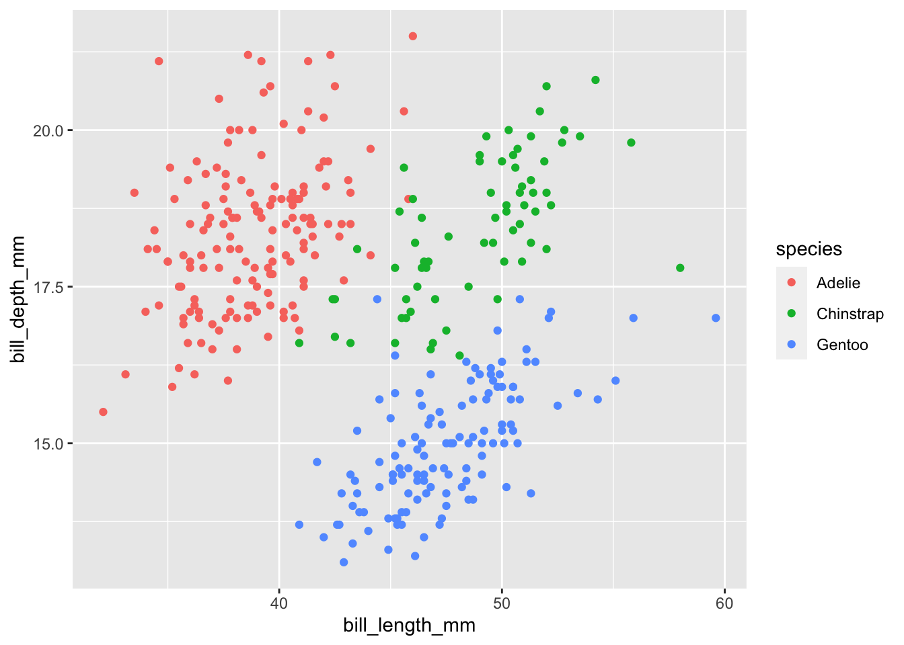
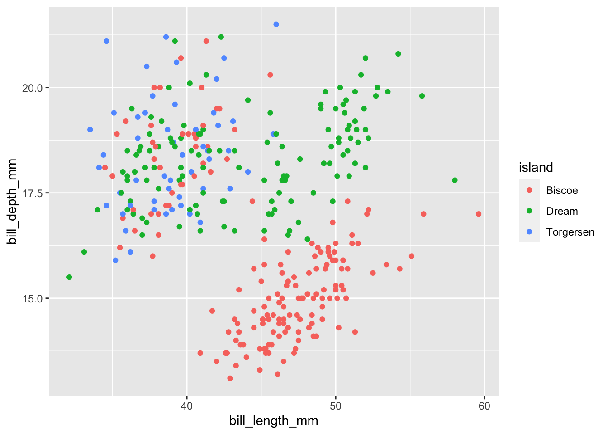

Charlie Joey Hadley
Bristol
United Kingdom
Email: charlie@rfortherestofus.com
1 Intro
{pagedown}https://github.com/rstudio/pagedown is designed to solve an annoying problem in RMarkdown
Formatting PDF RMarkdown documents is difficult and requires LaTeX.
The {pagedown} solution is to allow us to write HTML documents with pagination (and printing) as the primary goal. It’s really very good at it:
pagedown::thesis_paged
pagedown::jss_paged
pagedown::html_resume
pagedown::poster_relaxed
pagedown::business_card
The best choice for creating multiple columns in {pagedown} is flexbox because it’s browser width agnostic.
As before, we can use either <div> tags or :::
1.1 Using :::
This is the first column (on the left)

… and this is the second column (on the right)

1.2 Using <div>
This is the first column (on the left)

… and this is the second column (on the right)